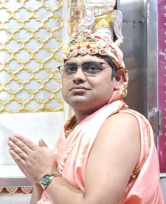
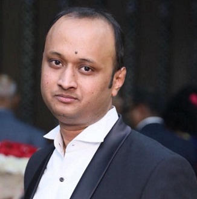
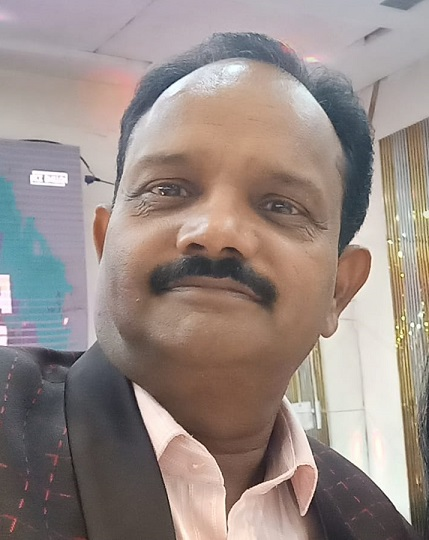

पारसनाथ ग्रुप (मुनि भक्त ग्रुप) के सभी प्रत्याशियों को अपना वोट और समर्थन देकर विजयी बनाएं और मंदिर के प्रति आप अपने कर्तव्य का पालन कर और अधिकार का उपयोग कर मंदिर में मुनि भक्त कमेटी को लाएं।
| पद |
नाम |
फोटो |
उपलब्धियाँ |
<>
| अध्यक्ष |
संजय जैन
(साड़ी वाले) |

फोटो
|
मंदिर समिति के पूर्व महामंत्री, अपने कार्यकाल में मंदिर में गुलाबी पत्थर का काम, मंदिर का सौंदर्यीकरण, संतों का चातुर्मास, और 6 मंदिरों की सामूहिक महावीर जयंती का आयोजन किया। |
| वरिष्ठ उपाध्यक्ष |
अनुज जैन CA |

फोटो
|
सफल CA फर्म के संचालक, मंदिर में प्रतिदिन अभिषेक पूजन कर्ता और मंदिर के फंड का बेहतरीन ऑडिट करने वाले। |
| उपाध्यक्ष |
राहुल जैन
(सुपुत्र श्री इंद्रसेन जैन) |

फोटो
|
मंदिर के मूल वेदी के निर्माणकर्ता, जैन भवन के शिलान्यासकर्ता, दानवीर परिवार। |
| उपाध्यक्ष |
संजय जैन
(सागर वाले) |

फोटो
|
परम गुरु भक्त, सभी संतों की सेवा में और धार्मिक कार्यक्रमों के लिए सदैव तत्पर। |
| महामंत्री |
कमल कुमार जैन
(सुपुत्र श्री मंगत राम जैन) |

फोटो
|
जैन मिलन ट्रस्टी, जैन परिवार यात्रा संघ के अध्यक्ष, अनेक तीर्थ यात्राओं के संयोजक, समाजसेवी, अनन्य मुनि भक्त। अनेक स्वास्थ्य कैंप लगवाना और साधु संतों को संघपति बनकर विहार कराना आदि आपकी अनेक उपलब्धियां हैं |
| मंत्री |
शुभम जैन
(सुपौत्र श्री सुखमाल चंद जैन चक्की वाले) |
फोटो
|
युवा जैन मिलन लक्ष्मी नगर के संस्थापक, मंदिर समिति के कार्यकाल में मंदिर में कुएं का निर्माण, युवाओं और बच्चों को धर्म से जोड़ने के लिए अनेक प्रकल्प, अनेक गौशालाओं में गौ ग्रास रथ चलवाया, गौ सेवा, वृक्षारोपण, जरुरतमंदों को वस्त्र वितरण आदि अनेक प्रकल्प
भारतीय जैन मिलन के केंद्रीय सदस्य, आल इंडिया जैन इंजिनीयर्स फोरम के क्षेत्रीय मंत्री |
घोषणा पत्र - मंदिर विकास और समाज सेवा के प्रस्तावित कार्य
- मंदिर में साधु-संतों का आगमन पुनः शुरू कराना और संतों के चातुर्मास के लिए प्रयास करना।
- मंदिर के विकास कार्य, जो वर्षों से रुके हुए थे, अब जोर-शोर से शुरू किए जाएंगे। शिखर पर लगे कलश जैसे उपेक्षित हिस्सों की देखभाल प्राथमिकता होगी।
- मंदिर की वित्तीय व्यवस्था में सुधार होगा, जिसे केवल योग्य और प्रमाणित चार्टर्ड अकाउंटेंट्स द्वारा संभाला जाएगा।
- मंदिर के पिछले कुछ वर्षों से नहीं लग रहे चिट्ठे का उचित ऑडिट कराके मंदिर का लेखा-जोखा समाज के सामने पारदर्शिता के साथ प्रस्तुत करना।
- मंदिर की सदस्यता खोलकर क्षेत्र के सभी जैन परिवारों को मंदिर से जोड़ना।
- पूर्व कमेटी द्वारा काटे गए सदस्यों को पुनः मंदिर से जोड़कर समाज को एकजुट करना।
- मंदिर की गली में प्रशासन की सहायता से साफ-सफाई का उचित प्रबंध करना ताकि दर्शनार्थियों को असुविधा न हो।
- कानून के दायरे में मंदिर के इर्द-गिर्द 100–200 मीटर की परिधि में मांसाहार की दुकानों पर रोक लगवाने का प्रयास करना।
- मंदिर का सौंदर्यीकरण कराना।
- मंदिर समिति में समाज के श्रेष्ठियों को पुनः संरक्षक बनाना।
- मंदिर में समय-समय पर धार्मिक कार्यक्रम, विधान, संतों के प्रवचन आदि पूर्ण उत्साह से कराना।
- मंदिर से युवाओं, बच्चों और सम्पूर्ण समाज को जोड़ने के लिए अनेक प्रकल्प शुरू करना।
- सभी संस्थाओं जैसे महिला मिलन, महिला मंडल, युवा समितियों को मंदिर से पुनः जोड़ना।
- सम्पूर्ण समाज जनों की डायरेक्टरी बनाना।
- मंदिर के शिखर की समय-समय पर साफ-सफाई कराना।
- मंदिर में प्रत्येक रविवार को बच्चों की पाठशाला सुचारु रूप से पुनः शुरू कराना और बड़ों के लिए स्वाध्याय शिविर प्रारम्भ कराना।
- संविधान के अनुसार प्रत्येक 6 माह में आम सभा बुलाना।
- यह सुनिश्चित करना कि भविष्य में कोई भी निर्णय आम सभा की पूर्ण सहमति और विश्वास के साथ ही लिया जाए, ताकि मंदिर की गरिमा और संसाधनों की सुरक्षा बनी रहे।
- समाज से एकत्रित की गई दान राशि का सही उपयोग केवल मंदिर के ही कार्यों में करना।
- मंदिर वाली गली जिसका नाम पूर्व में "जैन मंदिर मार्ग" था, उसकी पुनर्स्थापना कराने का प्रयास करना।
आशीर्वाद
परम पूज्य आचार्य श्री समय सागर जी महाराज, आचार्य श्री विशुद्ध सागर जी महाराज, आचार्य श्री वसुनंदी जी, आचार्य श्री पुष्पदंत सागर जी, आचार्य श्री अतिवीर जी महाराज, जगतपूज्य मुनिपुंगव श्री सुधासागर जी महाराज, मुनि श्री प्रथमानंद जी मुनिराज, गणिनी आर्यिका ज्ञानमती माताजी, आर्यिका दृष्टि भूषण माताजी, आर्यिका सरस्वती माताजी
समर्थक
भारतीय जैन मिलन, युवा जैन मिलन, महिला जैन मिलन, महिला मंडल, जैन परिवार यात्रा संघ, विश्व जैन संगठन लक्ष्मी नगर शकरपुर क्षेत्र, स्याद्वाद युवा क्लब (नॉएडा सेगमेंट), जिनशासन एकता संघ, राष्ट्रीय स्वयंसेवक संघ, भारतीय जैन मिलन केंद्रीय समिति आदि।
व्यक्तिगत समर्थन: श्री सुखमाल चंद जैन (चक्की वाले, पूर्व अध्यक्ष), श्री राजेंद्र प्रसाद जैन (साहित्यरत्न, पूर्व अध्यक्ष), श्री प्रेमचंद जैन संजय जैन (वैद्य जी, पूर्व अध्यक्ष), श्री अशोक जैन (नंदी गारमेंट्स, पूर्व अध्यक्ष), श्री नेमचंद जैन (पूर्व अध्यक्ष), श्री सुभाष जैन रेलवे वाले (पूर्व केशियर), श्री सुनील जैन (पूर्व केशियर), श्री अशोक जैन आलोक जैन (तरुण मित्र परिषद्), श्री संजय जैन (कागज़ी), श्री सिद्ध कुमार जैन, श्री प्रवीण जैन संयम जैन (रंछाड़ वाले), श्री सुशील जैन (बर्तन वाले), श्री माम चंद जैन प्रवीण जैन परिवार, श्री सुभाष जैन बिजली वाले परिवार, श्रीमति किरनमाला जैन परिवार, श्री मुकेश जैन परिवार, श्री संजय जैन परिवार, श्री राजीव जैन परिवार, श्री राजेश जैन परिवार, श्री मधुर जैन, श्री विवेक जैन परिवार (वर्धमान वाले), श्री पंकज जैन परिवार, श्री देवेंद्र कुमार जैन परिवार, सम्पूर्ण सागर वाला परिवार, श्री अमन जैन बैंक एन्क्लेव, श्री संजय जैन CA , सम्पूर्ण भबीसे वाला परिवार, श्री सलेक चंद जैन परिवार, श्री जुगमंदर दास जैन परिवार , श्री रमेश चंद जैन परिवार, श्री राजकुमार जैन परिवार, श्री सुखमाल चंद जैन परिवार, श्री अजय जैन करनावल वाले, श्री राकेश जैन करनावल वाले, श्री सुनील जैन (N 36), श्री निर्मल जैन परिवार, श्री सुरेश चंद जैन परिवार, श्री संदीप जैन अमरदीप जैन परिवार, श्री पूरन चंद जैन परिवार, श्री MP जैन परिवार